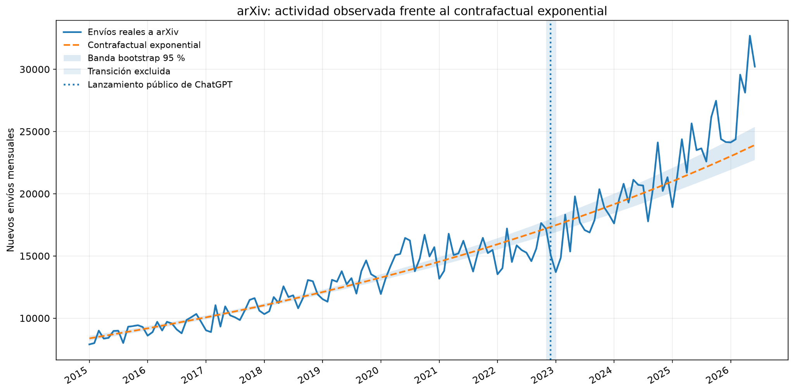
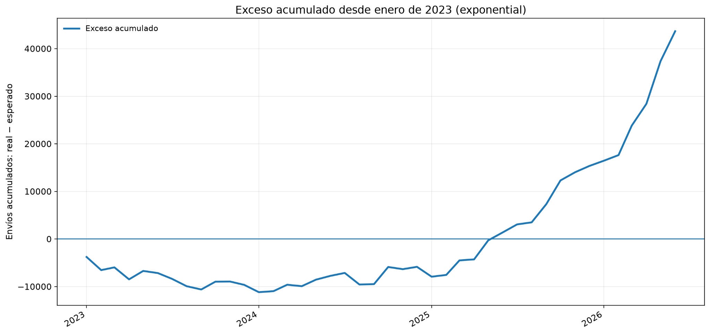
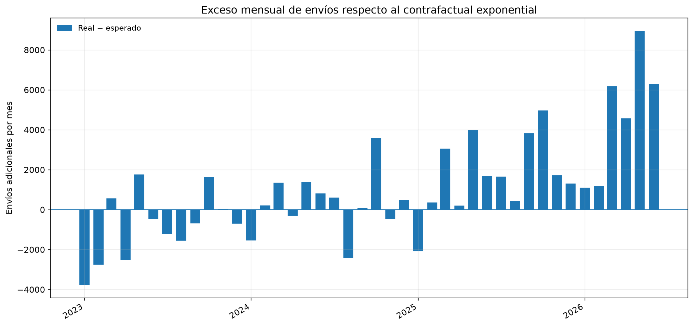
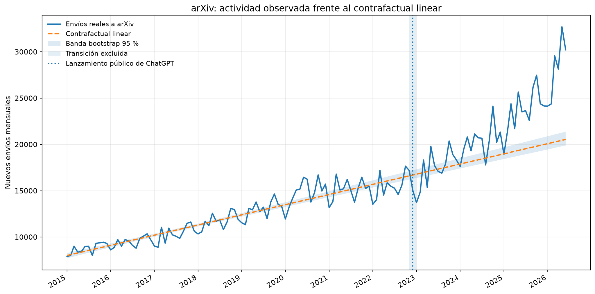

Desde que ChatGPT apareció a finales de 2022, marcando la entrada de los grandes modelos de lenguaje a la vida cotidiana, ha sido toda una revolución. Estas herramientas se han integrado en tareas de programación, traducción, redacción, búsqueda bibliográfica y otras muchas, incluyendo algunas más pedestres. Estaremos entonces casi todos de acuerdo con que esta revolución de la IA ha acelerado la producción de conocimiento —noten que digo la producción y no la asimilación—, pero ¿cuánto la ha acelerado? ¿Puede detectarse ya algún cambio cuantitativo en el ritmo de producción científica en la era transChatGPTiana?
Para buscar una respuesta, en este texto haremos algo bastante divertido: usaremos arXiv como un sensor parcial de la producción científica y compararemos la evolución de sus envíos mensuales con la trayectoria que habría seguido si la tendencia anterior a ChatGPT hubiera continuado sin cambios. El resultado es asombroso desde mi perspectiva: la tasa mensual ajustada pasó de aproximadamente un 0,768 % antes de ChatGPT a un 1,435 % desde enero de 2023. Es decir, el ritmo de crecimiento de la producción científica basado en arXiv fue alrededor de un 87 % mayor.
¿Demuestra esto que la IA produjo por sí sola más ciencia? No. Las curvas, por desgracia, todavía no incluyen una nota al pie explicando sus causas. Pero sí muestran que algo cambió en el ritmo de publicación, y que ese cambio puede medirse.
arXiv: un termómetro imperfecto
Pero primero lo primero: ¿qué es arXiv? Y no, no es un error gramatical ni solamente una forma especialmente creativa de escribir archive. Es un repositorio de preprints, o sea, de versiones públicas de artículos científicos que pueden compartirse antes, durante o después de la revisión por pares. Tiene una presencia especialmente importante en física, matemáticas, informática, estadística y otras ciencias cuantitativas.
¿Representa toda la ciencia? Por supuesto que no. Tampoco cada nuevo envío equivale a un descubrimiento, ni todos los trabajos tienen la misma calidad. arXiv incluso alberga ocasionalmente artículos de broma publicados por el April Fools’ Day, algo parecido a trasladar el Día de los Inocentes al lenguaje de las ecuaciones. Además, su moderación inicial no sustituye la revisión por pares de una revista.
Aun con esas limitaciones, arXiv tiene tres ventajas difíciles de ignorar: una serie temporal larga, una estructura relativamente estable y una API pública. Por eso resulta útil para plantear una pregunta estadística sencilla:
Si el ritmo de envíos anterior a ChatGPT hubiera continuado, ¿cuántos preprints esperaríamos encontrar desde enero de 2023 y cuántos se enviaron realmente?
La diferencia entre ambas trayectorias puede utilizarse como un termómetro aproximado del cambio en la producción científica abierta.
Antes de continuar, me gustaría dejar aquí un disclaimer de rigor para los más fieles defensores de la razón. Un aumento en el número de papers, término coloquial para los artículos en el dialecto académico, no implica necesariamente un aumento equivalente del conocimiento humano. De hecho, desde mi perspectiva, una producción enorme sin la calidad adecuada puede incluso ser contraproducente. Sin embargo, no se me ocurre una forma mejor de responder a esta pregunta con datos públicos, de manera sencilla y, sobre todo, en el espacio de una Napkin Note.
El experimento: construir un mundo sin ChatGPT
Descargamos mediante la API oficial de arXiv el número de nuevos envíos mensuales entre enero de 2015 y junio de 2026. Para reconstruir la tendencia previa utilizamos únicamente los datos comprendidos entre enero de 2015 y octubre de 2022. Noviembre y diciembre de 2022 quedaron fuera tanto del ajuste como de la evaluación. Son meses demasiado cercanos al lanzamiento público de ChatGPT para clasificarlos limpiamente como parte del mundo anterior o del posterior. Son meses schrödingerianos respecto a este lanzamiento. (¡Sí, permítanme estos pequeños momentos!)
La tendencia histórica se modeló de dos formas. La primera fue una extrapolación lineal:
y la segunda, una extrapolación exponencial:
Aquí \(N(t)\) representa el número de nuevos envíos durante el mes \(t\). \(A\), \(a\) y \(b\) son parámetros de ajuste.
El modelo exponencial se adoptó como referencia principal, no porque sea «la verdad», sino porque incorpora una idea razonable. Cuanto mayor es una comunidad científica, mayor puede ser también su capacidad de producir nuevos trabajos. En términos menos elegantes, mientras más somos, más publicamos. El modelo lineal se mantuvo como prueba de sensibilidad.

Figura 1. Envíos mensuales observados en arXiv y tendencia exponencial ajustada únicamente con datos hasta octubre de 2022. La banda sombreada representa una incertidumbre exploratoria obtenida mediante bootstrap.
La curva cambió de ritmo
El resultado más importante es el cambio en la tasa de crecimiento. Si los envíos mensuales siguen aproximadamente el modelo \(N(t)=Ae^{bt}\), la pendiente \(b\) puede transformarse en una tasa porcentual mensual mediante:
Aplicando este procedimiento a los dos periodos, obtenemos:
- Antes de ChatGPT: \(r_{\rm pre}=0{,}768\,\%\) mensual.
- Después de ChatGPT: \(r_{\rm post}=1{,}435\,\%\) mensual.
La diferencia absoluta es de \(0{,}667\) puntos porcentuales al mes. Sin embargo, para expresar cuánto aumentó el ritmo respecto al valor anterior resulta más útil calcular
Por tanto, la tasa mensual posterior fue aproximadamente 1,87 veces la tasa previa. Dicho de forma más directa, el ritmo de crecimiento fue cerca de un 87 % mayor. La curva no solo continuó subiendo, sino que comenzó a hacerlo más deprisa.
Del cambio de ritmo a los 43.670 envíos adicionales
La tasa es la magnitud que mejor describe el cambio de ritmo, pero un porcentaje mensual puede resultar abstracto. Por eso calculamos también el exceso acumulado respecto al contrafactual (término pomposo que reconozco me agrada y que describe el hipotético caso de una historia sin un evento específico: ¿qué habría sido de la ciencia si no hubiese aparecido ChatGPT?).
Para cada mes posterior a enero de 2023 definimos:
y sumamos las diferencias mensuales:
Entre enero de 2023 y junio de 2026 se registraron 906.209 envíos. El contrafactual exponencial predecía 862.539. Por tanto: hay un exceso acumulado de 43.670 envíos, equivalente a un crecimiento del 5,06 %.
Esta cifra no mide directamente la aceleración de la producción científica, pero muestra su huella. La tasa indica cuánto cambió el ritmo de crecimiento; el acumulado indica cuánta distancia terminó separando la trayectoria observada de la trayectoria esperada.
La señal tardó en aparecer
Si ChatGPT hubiera actuado como un interruptor mágico de productividad, esperaríamos un salto abrupto en diciembre de 2022 o enero de 2023. Los datos, menos aficionados al espectáculo, no muestran algo tan limpio.
Durante buena parte de 2023 y comienzos de 2024, los envíos observados se situaron con frecuencia por debajo del contrafactual exponencial. Como consecuencia, el exceso acumulado fue inicialmente negativo. Esto puede tener varias explicaciones: el modelo pudo sobreestimar temporalmente la tendencia, la comunidad científica necesitó tiempo para incorporar las nuevas herramientas o la señal solo se hizo visible al acumular suficientes meses.
A partir de 2025, los meses con exceso positivo se vuelven más frecuentes y el exceso de mayor magnitud. El acumulado cruza el cero durante ese año y continúa aumentando hasta alcanzar los 43.670 envíos adicionales al cierre del periodo.

Figura 2. La desviación acumulada respecto al modelo exponencial no aparece de inmediato: primero es negativa, después cambia de signo y aumenta con rapidez en la parte final de la serie.
El gráfico mensual permite ver que el resultado no procede de una subida uniforme. Surge de la combinación entre oscilaciones estacionales y varios meses recientes con un número de envíos claramente superior al esperado.

Figura 3. Diferencia mensual entre el número de envíos observado y el estimado por el modelo exponencial. Las barras positivas indican meses por encima del contrafactual; las negativas, meses por debajo.
El contrafactual importa
La extrapolación, por útil que sea, no es una máquina del tiempo. El resultado depende de cómo describamos la tendencia anterior.
Con el modelo lineal, el número esperado entre enero de 2023 y junio de 2026 se reduce a 783.816 envíos frente a los 906.209 observados, el exceso asciende a 122.393, equivalente a un 15,62 %.
| Modelo contrafactual | Envíos esperados ene. 2023–jun. 2026 |
Exceso acumulado | Exceso relativo |
|---|---|---|---|
| Lineal | 783.816 | 122.393 | 15,62 % |
| Exponencial | 862.539 | 43.670 | 5,06 % |

Figura 4. El contrafactual lineal predice un crecimiento más lento y, por tanto, genera una estimación mayor del exceso. La comparación muestra la sensibilidad del acumulado a la forma funcional elegida.
Conclusiones con una gran imaginación
Los envíos mensuales a arXiv muestran un cambio cuantitativo claro después de 2023. Bajo el ajuste exponencial, la tasa de crecimiento pasó del 0,768 % al 1,435 % mensual, representando un incremento relativo cercano al 87 %. Esa aceleración dejó, hasta junio de 2026, una diferencia acumulada de 43.670 envíos respecto a la tendencia exponencial anterior.
Los datos no permiten afirmar que la inteligencia artificial sea la única responsable. En estos años también podrían haber influido el crecimiento de las comunidades científicas, cambios en las políticas de publicación, nuevas áreas de investigación, incentivos académicos y otras transformaciones que este análisis no tiene en cuenta. En cualquier caso, la curva de producción científica abierta cambió de pendiente y comenzó a crecer más deprisa en la era transChatGPTiana.
Dadas las conclusiones más serias, echemos ahora a volar nuestra imaginación y veamos qué significaría este aumento traducido a tiempo histórico, solo como ejercicio mental. Si suponemos, como simplificación, que alcanzar un determinado hito exige recorrer siempre la misma «distancia», el tiempo necesario sería inversamente proporcional al ritmo:
Es decir, el mismo recorrido requeriría aproximadamente el 53,5 % del tiempo original, lo que equivale a una reducción temporal cercana al 46,5 %. Por ejemplo, un avance que antes necesitara 100 años tardaría unos 53,5 años con el nuevo ritmo.
Empecemos con la comparación histórica, con la advertencia de que se trata de una metáfora y no de una máquina del tiempo científica. Entre el primer vuelo propulsado de los hermanos Wright, el 17 de diciembre de 1903, y la llegada del Apolo 11 a la Luna, en julio de 1969, transcurrieron unos 65 años y medio. Si todo aquel proceso tecnológico hubiera avanzado a un ritmo similar al actual, ese mismo recorrido habría durado alrededor de 35 años; habríamos llegado a la Luna hacia 1939, unas tres décadas antes.
Un ejemplo menos cinematográfico sería el Proyecto Genoma Humano, iniciado en octubre de 1990 y completado en abril de 2003. Sus doce años y medio de trabajo se reducirían, bajo la misma simplificación, a unos seis años y ocho meses: el genoma humano habría quedado esencialmente secuenciado hacia mediados de 1997. De nuevo, la comparación no pretende afirmar que más artículos produzcan automáticamente descubrimientos más rápidos, pero nos sirve para visualizar la magnitud del cambio.
También podemos saltar del telégrafo a internet. Entre el célebre primer mensaje de Morse, enviado en 1844, y la aparición de la primera página web, en 1991, pasaron unos 147 años. Comprimido por nuestro factor, el mismo recorrido habría terminado hacia 1923. La humanidad habría entrado en la era de la web durante los felices años veinte: páginas en blanco y negro, buscadores con sombrero y discusiones en redes sociales transmitidas, quizá, a golpe de telegrama.
Proyectemos ahora este juego matemático hacia el futuro. Algunos estudios inspirados en la escala de Kardashev estiman que la humanidad podría convertirse en una civilización de tipo I, capaz, en términos generales, de gestionar la energía disponible a escala planetaria, alrededor del año 2371. Si comprimiéramos ese camino mediante nuestro factor de aceleración, la fecha se desplazaría hasta aproximadamente 2209. Seguiría quedando lejos, pero nuestros tataranietos podrían heredar algo más interesante que una hipoteca y varias contraseñas olvidadas: un planeta convertido, por fin, en una infraestructura tecnológica coordinada.
Otros modelos más optimistas sitúan la llegada al tipo I hacia 2271 y una hipotética civilización de tipo II, capaz de explotar energía a escala estelar mediante estructuras como enjambres de Dyson, entre los años 3200 y 3500. Aplicando nuestra absurda calculadora de aceleración, el tipo I llegaría aproximadamente en 2156, mientras que el dominio energético del sistema solar podría adelantarse hasta algún momento entre 2650 y 2810. Dicho de otra manera, podríamos empezar a desmontar asteroides, poblar lunas y rodear el Sol con paneles solares varios siglos antes de lo previsto. La mala noticia es que incluso una civilización capaz de capturar la energía de una estrella probablemente seguiría convocando reuniones que podrían haberse resuelto con un correo.
Naturalmente, toda utopía futurista necesita su pequeño apocalipsis. Stephen Hawking advirtió en 2017 que la humanidad debía ser capaz de establecerse fuera de la Tierra en un plazo aproximado de cien años para mejorar sus posibilidades de supervivencia frente a amenazas existenciales. Si aplicáramos el mismo factor de 1,87 a esa cuenta atrás, el año 2117 se convertiría aproximadamente en 2070. No porque los peligros respeten nuestras ecuaciones, sino porque toda aceleración tiene una lectura menos tranquilizadora; si la inteligencia artificial nos ayuda a encontrar antes la cura del cáncer o a construir una base lunar, estupendo; pero también podría ayudarnos a diseñar antes armas más eficaces, sistemas de vigilancia más invasivos o formas extraordinariamente sofisticadas de discutir con desconocidos.
Ahí reside la advertencia que se esconde detrás del entusiasmo. Acelerar la producción científica no garantiza acelerar únicamente las cosas buenas. El conocimiento es un motor, no un volante; aumenta nuestra capacidad de movimiento, pero no decide hacia dónde conducimos. Podemos llegar antes a Marte, a la energía de fusión o a una medicina personalizada; también podemos llegar antes a una crisis que todavía no sabemos gestionar. La pregunta importante no es solo cuánto más rápido avanza la ciencia, sino si la humanidad está aprendiendo a conducir al mismo ritmo que pisa el acelerador.
Estas comparaciones son deliberadamente absurdas porque el progreso científico no avanza como un tren sobre una vía recta, depende de descubrimientos inesperados, financiación, instituciones, guerras, errores y personas concretas. De igual modo son bastante entretenidas y ahora que conoces la regla, puedes aplicarla a tus propios hitos históricos y preguntarte cuánto antes habrían ocurrido en una ciencia acelerada.
Epílogo necesario
¿Estamos produciendo más conocimiento o simplemente más papers? Esa es otra pregunta, probablemente más importante y, desde luego, bastante más incómoda. Por ahora, al menos, sabemos que la cinta transportadora académica ha aumentado su velocidad. Lo que todavía queda por averiguar es cuánto de lo que circula sobre ella merece realmente llegar al final.
En este punto quiero cerrar con una observación dirigida a mis colegas académicos. Desde mi perspectiva, la combinación de la inteligencia artificial como herramienta de producción masiva con unos indicadores bibliométricos centrados principalmente en la cantidad —y mucho menos en la calidad— puede generar un problema serio. Si las plazas, los contratos y el reconocimiento continúan premiando sobre todo a quienes más publican, la academia corre el riesgo de seleccionar a los investigadores más productivos, aunque esa productividad se consiga a costa de rebajar los estándares. El resultado sería un filtro perverso; un sistema diseñado para impulsar el conocimiento que termina favoreciendo el volumen por encima del valor. Quizá ha llegado el momento de pensar en nuevos indicadores capaces de medir no solo cuánto se publica, sino cuánto de lo publicado merece realmente permanecer.
Datos y método
- Los datos mensuales se obtuvieron mediante la API oficial de arXiv, utilizando las fechas de envío (
submittedDate). - El corte temporal se sitúa en el lanzamiento público de ChatGPT, el 30 de noviembre de 2022.
- Periodo de ajuste del contrafactual: enero de 2015–octubre de 2022.
- Periodo evaluado: enero de 2023–junio de 2026.
- Noviembre y diciembre de 2022 se excluyeron como intervalo de transición.
- El código genera las series mensuales, los contrafactuales lineal y exponencial, las bandas bootstrap exploratorias y las figuras incluidas en el artículo.
- Todos los resultados deben interpretarse como una estimación descriptiva y contrafactual, no como evidencia causal.

Comentarios
Enviar un comentario
¿Qué te ha parecido? Déjanos tu comentario. Todos los comentarios serán revisados antes de su publicación a fin de mantener un espacio respetuoso, libre de spam y acorde a las normas editoriales.